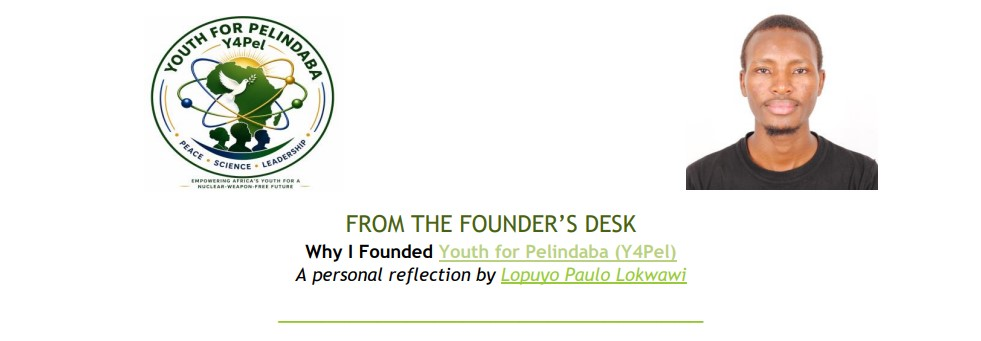

Africa's First Youth Platform Dedicated To Advancing The Vision Of The Treaty Of Pelindaba
Join the MovementY4Pel is a pan-African youth-led initiative advancing the Treaty of Pelindaba through education, dialogue, research, leadership, and partnerships.
Africa's First Youth Platform Dedicated To Advancing The Vision Of The Treaty Of Pelindaba.
Hover, tap, or focus on a country to see its representation status.
Founder, Youth for Pelindaba (Y4Pel)
Lopuyo Paulo Lokwawi is a physicist, health scientist, and advocate for nuclear disarmament, radiation safety, and youth engagement in Africa. He is the Founder of Youth for Pelindaba (Y4Pel), a pan-African initiative dedicated to advancing the vision and objectives of the Treaty of Pelindaba by empowering young people through education, dialogue, research, leadership, and international collaboration.
Paulo is a United Nations Office for Disarmament Affairs (UNODA) Youth Leader for a World Without Nuclear Weapons, a participant in the Hiroshima-ICAN Academy , and a member of the Nuclear Society of Kenya .
His work focuses on bridging nuclear science, public health, and policy to promote the peaceful uses of nuclear technology, strengthen radiation safety awareness, and inspire the next generation of African leaders committed to a peaceful, secure, and nuclear-weapon-free Africa. Connect on LinkedInAdvancing nuclear disarmament, non-proliferation, and a peaceful Africa.
Advocating for nuclear disarmament, radiation safety, youth participation, and the peaceful uses of nuclear science and technology across Africa.
Empowering young Africans to become leaders and changemakers.
Supporting science diplomacy, policy dialogue, and advocacy.
Become part of a pan-African network of students, professionals, researchers and peace advocates working towards a Nuclear-Weapon-Free Africa.
Follow our latest announcements, opportunities, and thought leadership from Youth for Pelindaba (Y4Pel).

Founder's DeskA personal reflection by Founder Paulo Lopuyo Lokwawi on the inspiration behind Youth for Pelindaba (Y4Pel), the importance of the Treaty of Pelindaba, and why Africa's youth must play a leading role in advancing peace, nuclear disarmament, radiation safety, and the peaceful uses of nuclear science and technology.
📄 Read Article